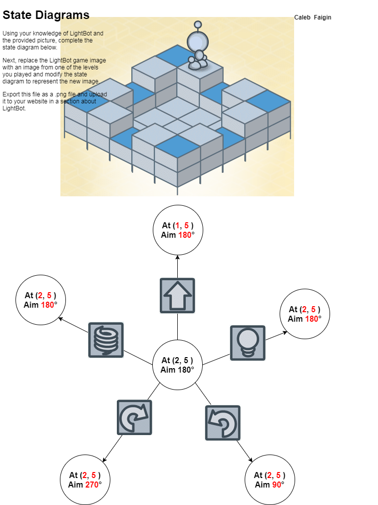
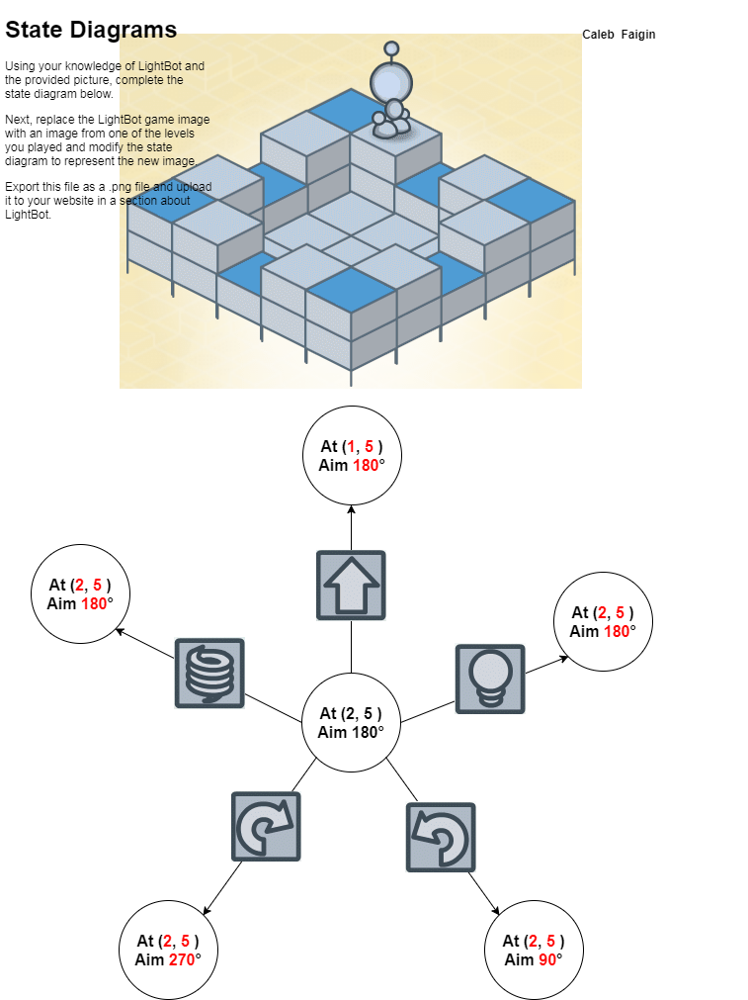

.jpg) 


"Computing will transform society." That is a phrase that has been around since computers first started, but does it ring true? The book Blown to Bits is about the computing and how it changes not just singular lives but the way we live as a society. And like the title of this relections shows computing did change society. One example of this is the fact that you can now download songs at the SAME quality as the original, and companies can’t do anything about it. The amount of information put on the internet is so vast that by the time the courts issue a take down its been put up ten more times. If someone’s favorite series gets taken off of Netflix or Hulu they can find it all online. Computing changed the way that we view entertainment
Light bot reflection The computer game lightbot is a simple game about coding a little robot to light up blue tiles, this game was made by coders and because of that it accurately depicts what codings like. You have to put in different inputs and you receive different outputs, you can even use loops to make your bot repeat. But with that said it also isn’t like a computer because your goal is different. In lightbot you only have to light up the tiles, whereas in real life you can have different goal, like making a light turn on or making a motor spin.
1) Writing code in smaller pieces allows you to revise more easily and complete the coding in chunks without having to review massive amounts of coding, it leaves less room for error.
2) Building LEGO’s is a good example of figuring out a difficult problem when an error was made. Much like the program in coding when you build the LEGO creation you can make an error that you don’t notice until you’ve completed the creation. This forces you to backtrack to discover mistakes.
3) Our group thinks that the processors have multiple programs opened at once and cycles through the commands of each program in order and continues to do this at a fast pace giving the illusion that multiple programs are being ran at once.
1) Using a program that uses hundred of sprites it is does not work that well if you have one button that goes to all of the sprites. It is better to have one sprite per one button (much like a function), because it will activate much faster. With multiple sprites the program has to take the time to run each sprites whereas one button will do it instantly.
2) I think that events and handlers are something that calls back and handles inputs. Within different structures you can use events as keywords and other such things.
3) a) Some methods in the play playG() key that are encapsulated is how G only does one thing. One example of this is how I made a button that does the exact same thing that C does except it has a different sprite. b) I think that it would've been convenient if the programmer put in a different variation of playG() like making one key use both the drum and sax or drum and tia. Even though you’re not supposed to do that I think it would be an interesting way to use it.
1) The primary advantage of using a fixed variable is that it will make changing your code a lot easier. If you have a code that has a bunch of set numbers it is better to have a variable if you want to change the numbers, instead of having to go through the whole code.
2) (Pseudo Code) If Trash full Take trash out Else wait until parents yell at you
3) Two examples of an accumulator variable are scoreboards and a cash register that counts customers. The scoreboard will go up every time some scores and it will keep going up until the end of the game. While a cash register can count how many people go to the store and buy something.
4) The accumulator role is to count different objects and keep them, whereas an aggregator will add everything together such as how many times a mouse is clicked or how many times a goal is scored.
A Stepper is a variable that will go through different iterations of numbers i.e. 1, 3, 5, 7. It can go through common patterns. A Walker is a variable that can refer to members of a collection during iteration. A Best-So-Far variable is a variable that can record the best/worst set of numbers. It goes through the list and picks out the best or worst option, depending on the settings.
You can use a Best-So-Far to try and figure out the best test score on a test in a class. You can also use it to see a leaderboard in an arcade game.